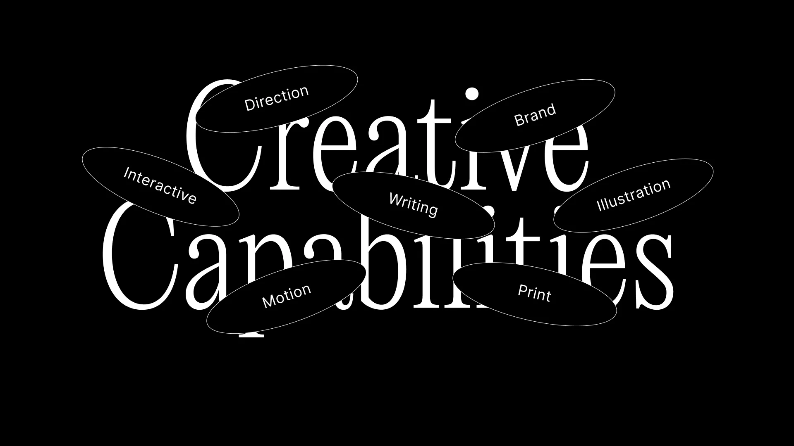

About
Hello, I’m Shawn. I’m a Detroit-based creative director and designer making complex ideas clear, compelling, and impossible to ignore.
Bio
I’m a multidisciplinary designer with over 15 years of experience building brands and digital experiences for startups, global companies, and everything in between.
My work spans brand strategy, visual identity, digital design, and motion. I’m equally comfortable leading creative direction, building scalable design systems, and getting hands-on with the details that bring an idea to life.
Outside of design, I write and direct animated comedy, perform improv, and pursue all kinds of creative experiments. I believe curiosity, humor, and a willingness to try something unexpected make for better creative work.
Experience
- Creative DirectorFinalFinalOct 2024 – Present
- Senior Brand DesignerSquareApr 2020 – Feb 2024
- Co-founder, Writer, Brand DesignerUgly MagazineOct 2019 – Apr 2023
- Senior Visual DesignerCensysJan 2019 – Jan 2020
- Product DesignerDetroit LabsFeb 2017 – Dec 2019
- Visual DesignerDuo SecurityMar 2014 – Feb 2017
- Web DesignerMomentumNov 2011 – Mar 2014
Selected Clients
- Anthropic
- Adult Swim
- Square
- Cisco
- Jimmy Johns
- General Motors
- Quicken Loans
- Rocket Mortgage
- Little Caesars
- Detroit Free Press

Capabilities
- Creative Direction
- Brand Strategy & Identity
- Art Direction
- Visual Design Systems
- Digital & Web Design
- Motion Design & Animation
- Campaigns & Brand Activations
- Typography & Graphic Design
- Presentation & Editorial Design
- Creative Technology & Generative Tools
- Leadership & Mentorship
- Design Production
Tools & Technology
- Figma
- Adobe Creative Suite
- Claude Code / Cursor / ChatGPT
- Midjourney / Runway / Weave
- Framer
- Keynote / PowerPoint
- Google Cloud Tools
- Procreate
- HTML & CSS
- Womp